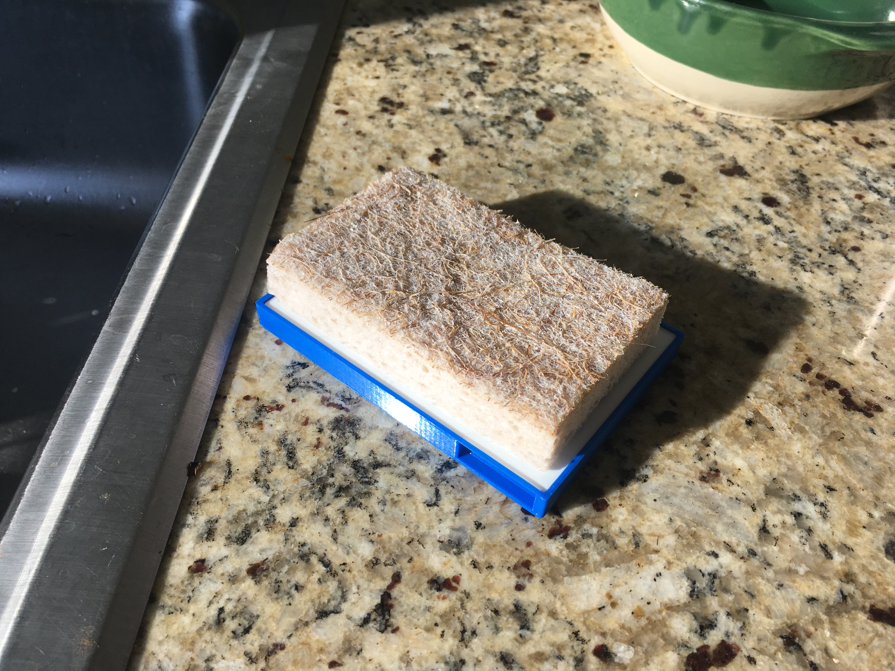

5:3D
After a couple of 3D printing tests that included this little planet i made in Fusion

and this model of hurricane Julio as it appeared on August 7 at 2PM (2100 UTC), which i found on the NASA website,

i decided to design and print something with more practical applications.
Those of you who also use bar soap will know that it can be kind of gross without a good soap holder that you can clean every now and then. I made this holder in Fusion composed of two parts: a base and a grill, and printed them in different colors using the Prusa printers in the lab.

In real life, the soap holder looks like this:
And in the shower, doing its job, it looks like this:
Since part of this week's assignment was to "discuss pros and cons of 3D printing this object rather than using other fabrication methods," one thing i thought would be advantageous about this fabrication method in particular is how easily you can digitally scale the model up or down. While a bar soap (one it its full form, unlike the ones you can see above ^ ) is roughly 10cm x 6cm, the sponge i have in my kitchen is about 12cm x 7cm, so by simply asking the Prusa Slicer to send the same design to print but at 120% its size, i was able to print a sponge holder with virtually no extra work:

That i thought was a cool feature.
As for a possible disadvantage, my initial design was really this mate gourd that i think came out so beautifully:

I made it knowing it would probably not be super safe to drink from considering the printing material and the high temperature of the liquid it would hold because 1) i actually need one and 2) i got a little obsessed with making it perfect once i started designing it and decided to keep going.
My idea was to get some kind of coating at a hardware store that would seal off all the tiny crevices and be safe at high temperatures, but after searching online for a while it became clear that this would be difficult to find and still nearly impossible to determine whether it would actually be as safe as doing it using ceramic, so maybe i'll just go make it with my hands at a ceramic store. ¯\_(ツ)_/¯
---
Last thing:
I know we were also supposed to scan something. I tried scanning some flowers but the result was so bad (they were basically a blob) that i decided to scan my head instead. Like others, i had trouble getting the program so scan my hair:
so i uploaded the file to Blender with the goal of giving myself a flower infection like this one:

While i did not exactly succeed, the result was kind of cool:
When i went to Prusa to slice it, however, the estimates were way too costly, especially once i added supports for all the spikes (flowers), so after a failed attempt at printing without supports, i decided not to be wasteful until i find a scan that i actually really care about instead of a weird bust of myself.